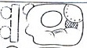
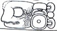
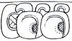
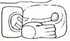
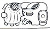
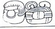

| A1 | Distance Number: 17 K'ins | |
| B1 |  | Distance Number continued: 7 Winals |
| A2 |  | u-ti-ya "it happened" |
| B2 | Tzolk'in: 2 Ahaw | |
| C1 | Haab: 13 Pax | |
| D1 |  | YAX tzi-pi |
| C2 | Tzolk'in: ti 7 K'aban (Should be 3?) | |
| D2 | Haab: 10 Xul (should be 5?) |
| E1 |  | yax k'alah-ha (hun?) "the first placing (of the headband?)" |
| F1 | ta? ?? | |
| E2 |  | Balah |
| F2 |  | UT-ya Mutul "it happened at Mutul" |